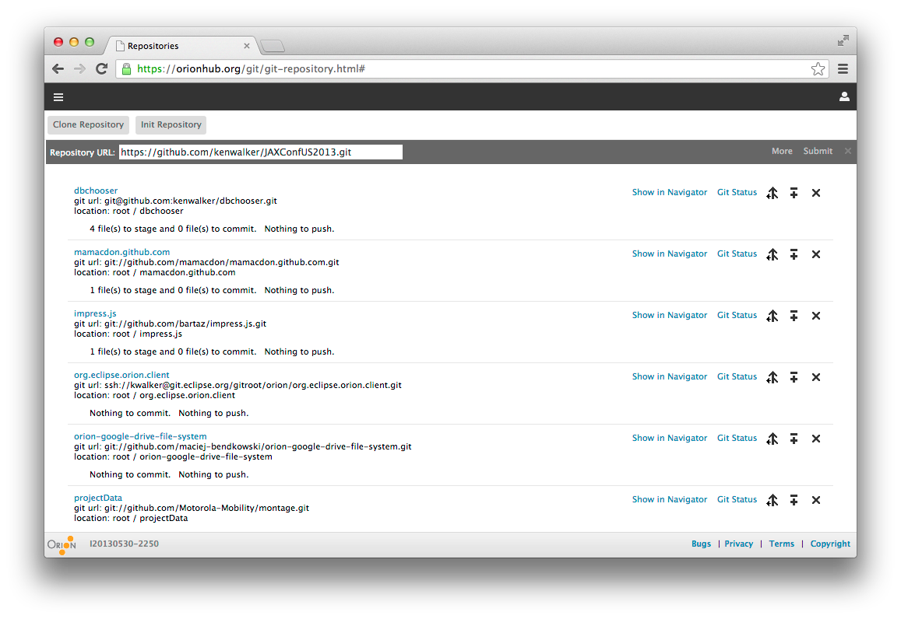
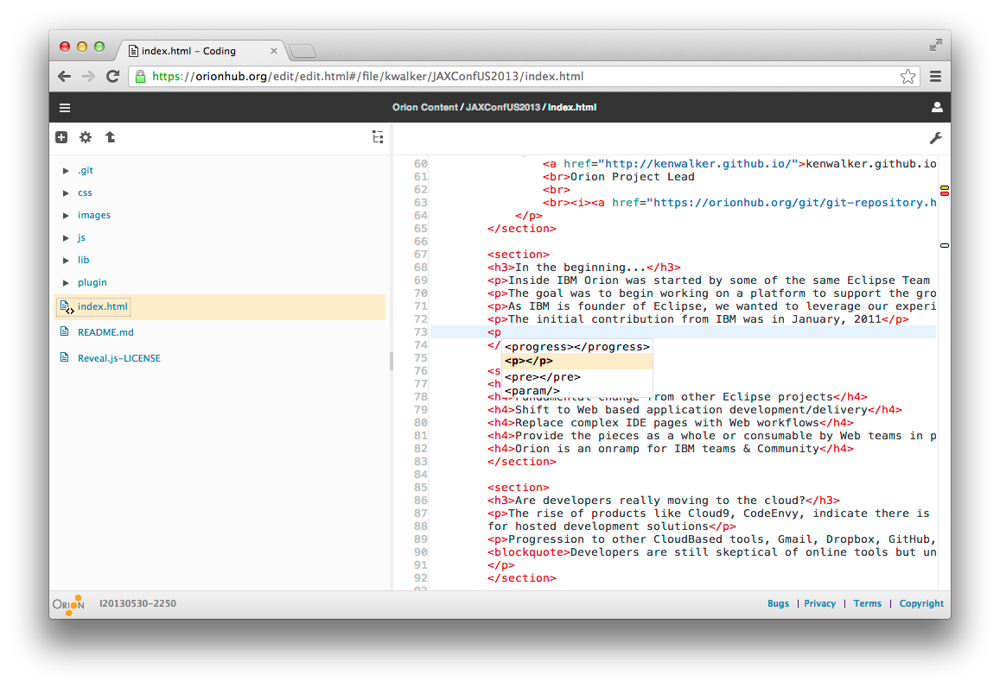
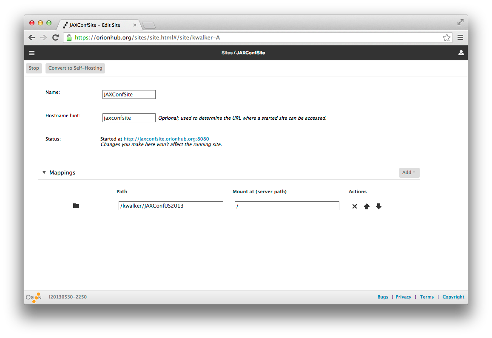
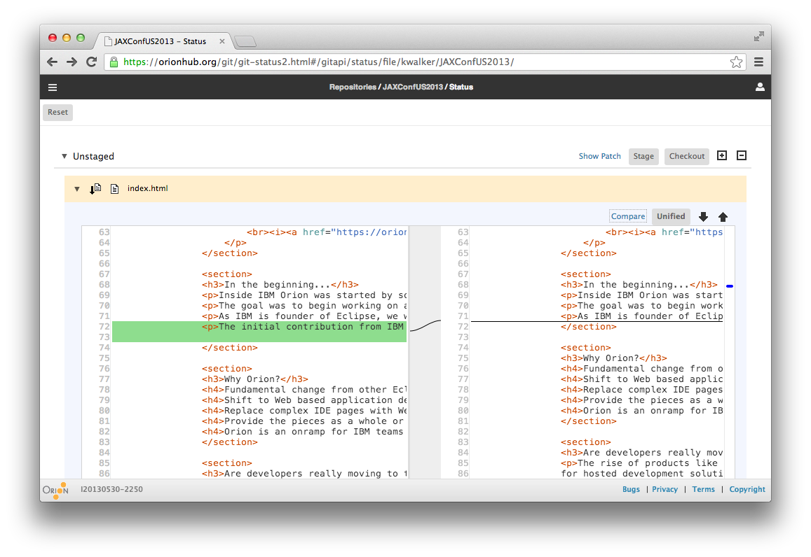
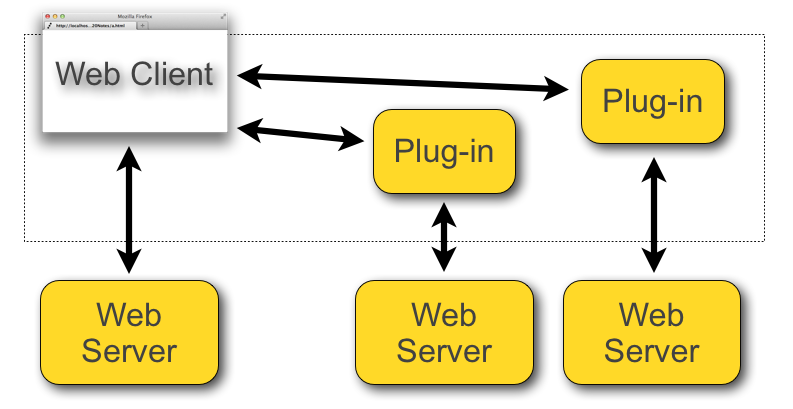
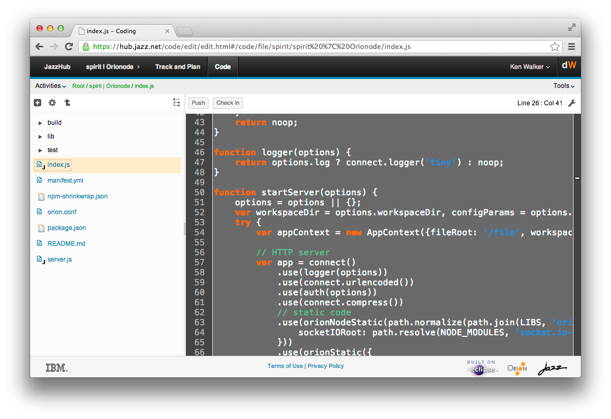
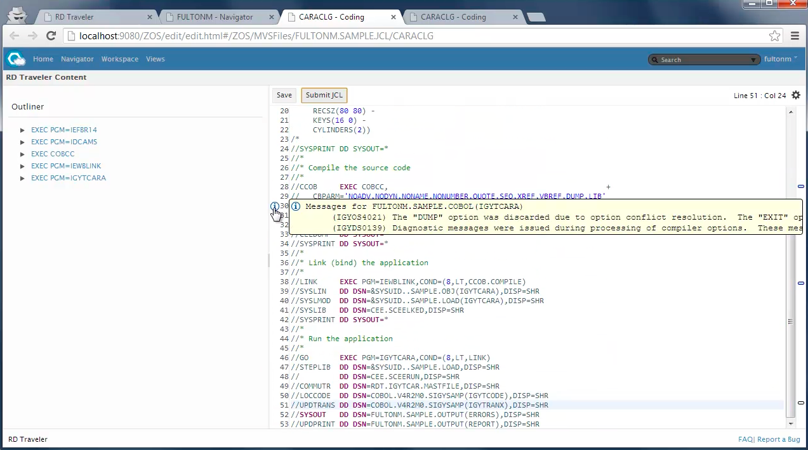

Not finished slides yet...
Cloud Development goes Lightweight
The Open Source Orion Project
JAXConf US - Jun, 2013

kenwalker.github.io / @kwalker / @orionhub
Orion Project Lead
Start editing this talk at OrionHub.org
In the beginning...
Inside IBM Orion was started by some of the same Eclipse Team members from SWT & Platform team
The goal was to begin working on a platform to support the growing initiatives for Cloud
As IBM is a founder of Eclipse, we wanted to leverage our experiences, investment, and the governance model
Why Orion?
Fundamental change from other Eclipse projects
Shift to Web based application development/delivery
Replace complex IDE pages with Web workflows
Provide the pieces as a whole or consumable by Web teams in product (IBM and others)
Orion is an onramp for IBM teams & Community
Are developers really moving to the cloud?
The rise of products like Cloud9, CodeEnvy, indicate there is a desire for hosted development solutions
Progression to other CloudBased tools, Gmail, Dropbox, GitHub, Ohloh, CloudFoundry, AmazonWebServices
Developers are still skeptical of online tools but understand the complex nature of IDE setup has to change
How can Orion satisfy developers?
Follow a set of design principles, be agile
Embrace the modern browser capabilities
Create a platform that’s extensible
Create web components that are consumable
Enable cross-site workflows & integration points
Create a suite that provides what desktop tools do
...all in a browser
Clone a repository
Edit your application
Test it live
Check changes in
How are these pages constructed?
Orion has many templates by default
The necessary functionality for developers
Product teams can start with existing pages
Orion provides extensibility points to plugins
Extensibility is what sets Orion apart!!
Extensible in the browser?
"plugins" live right in the page
Agnostic to where the plugin or code came from
No lock-in to plugin providers
How are plugins implemented
JavaScript implementation of OSGi Services API
Uses Promises for return types and follows the Lifecycle and Bundle State semantics used for Plugins
Implementation of Configuration Admin and Metatype for Plugin Settings and Schema
OSGI seems like overengineered Java stuff. I'm generally pretty skeptical of big frameworks that do everything for everyone. Usually they're a big pain.
-Isaac Schlueter
Example JSBeautify Plugin
You provide html, javascript elements, from your site
In this case served up from a GitHub account

So how is Orion being consumed?
Mozilla thru Firefox integration
Embedded in the debugger and scratchpad

Hewlett Packard
HP DevAnywhere, the entire software development lifecycle in the cloud
Node.js Orion server including editor, plugins, extensions

VMWare/Pivotal Scripted Editor
Desktop editor only (like Adobe Brackets)
scr [filename] - improved content assist through introspection supporting AMD loading

IBM JazzHub & BlueMix
Cloud ALM solution supporting hosted SCM and Deployment
{kind=link}
IBM JazzHub - Work items
IBM Cloud ALM solution supporting Jazz SCM and GitHub

IBM RD Traveler
z/OS Cloud based cobol development anywhere
{kind=link}
Cloudfier.com
Business centric solution for Cloud apps

Embed Orion in web sites
Esprima examples from Ariya Hidayat

Browser side compare widgets
Complete JavaScript implementation of compare functionality

Embedding in presentations!
Slightly meta here...
<section>
<h3>Embedding in presentations!</h3>
<h4>Slightly meta here...</h4>
<pre class="editor" data-editor-lang="js" data-editor-theme="css/nimbus.css" style="height:400px">
/*global require window console */
var express = require("express");
var app = express();
app.get('/', function(req, res) {
res.send('Hello from Node');
});
app.listen(3000);
</pre>
</section>
Orion Java Server
Orion is available as a stand-alone Java based server or WAR file that takes 2 minutes to setup a multi-user cloud based development platform
Those wishing to extent the Java server directly can write Eclipse plugins to surface RESTful APIs to the client

Orion Node.js Server
Also available as a Node.js based application, with less functionality, but full editor and search capabilities
Very portable and great performance
Deploy anywhere Node is installed
>npm install orion

Need another server platform? Write one
Chris McGee working on a Go Development platform
Wrote the file system and search API in Go
Added extension plugins for build and format

Orion on Mobile
Tablets such as the iPad, iPad mini and Google based platforms are also supported by Orion
Not specifically written responsive but we're working on it

Not done yet...
Find out more
Read our blog at Planet Orion
Check out the Orion BUZZ
Lots of information in the Orion Wiki
Follow @OrionHub on Twitter
Create an account and try it at OrionHub
kenwalker (github) / @kwalker / @orionhub
Orion Lead and Orion Dev Lead at IBM Canada
Clone this talk into OrionHub.org from GitHub